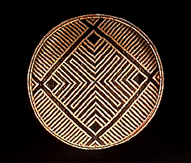

HOME FUNDEF

| |
|
Las fotos se pueden cliquear para mostrar otra foto de de la cesta más grande. Ver Instrucciones para mayor información de como utilizar estos recursos.
Las fotografías de las cestas estarán disponibles en catálogos y libros que actualmente prepara la investigadora Marie Claude Mattéi Muller. Las fotografías en diapositivas permanecen en custodia en los archivos audiovisuales de FUNDEF, tanto en celuloide, como en videos que fueron digitalizados cuadro a cuadro, para ingresarlos en este Weeb. Ver Ventas.